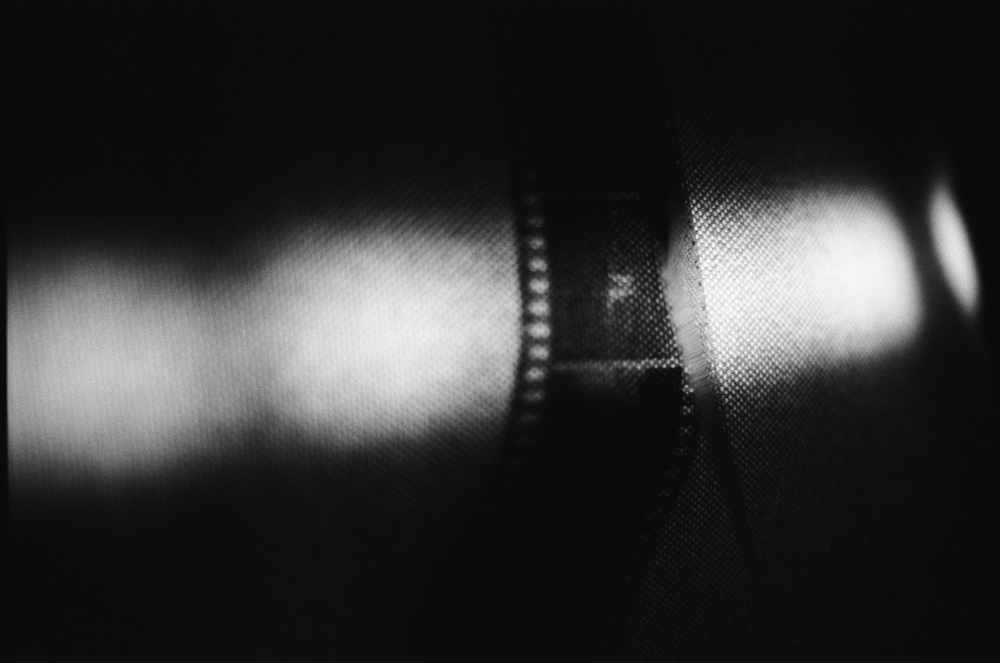
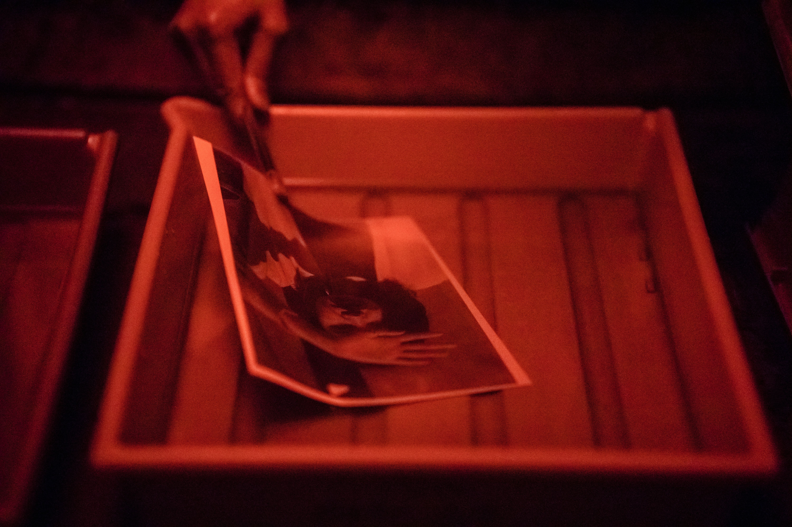
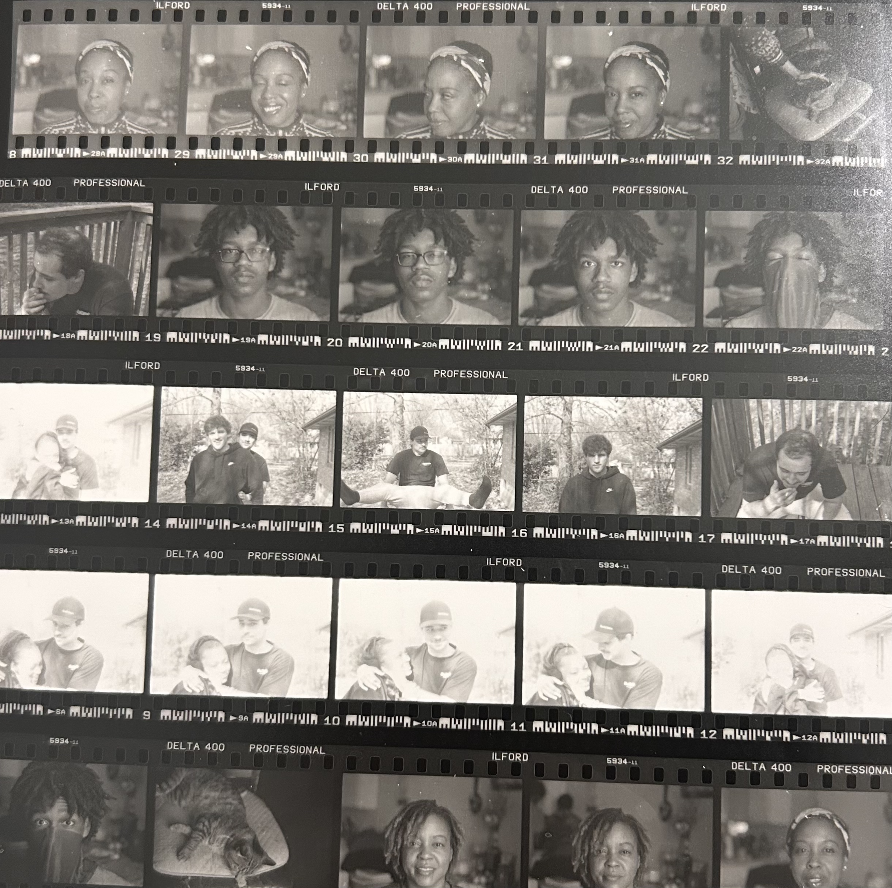
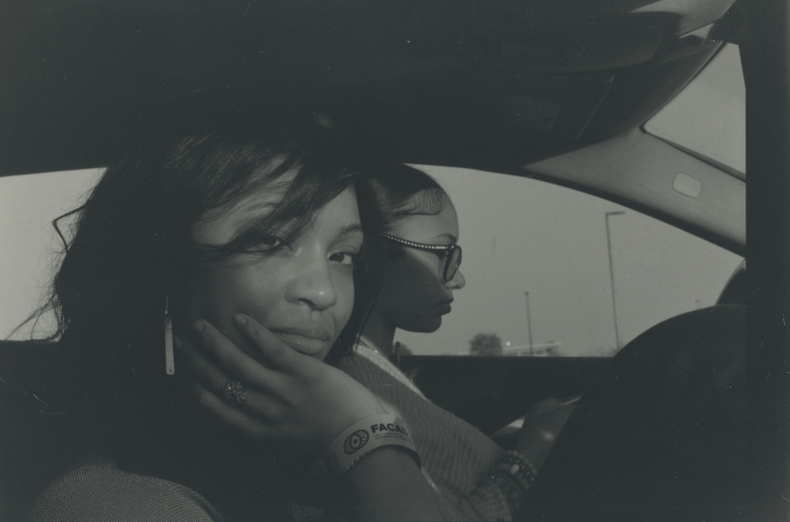

01 — BEFORE THE IMAGE
Every photograph begins with light.
Long before images lived on screens, photographs were formed through light-sensitive materials, chemical reactions, and time. Film photography turned fleeting moments into physical objects— imperfect, tangible, and sometimes unpredictable.

02 — IN THE DARKROOM
An image, slowly revealed.
Developing film transforms an exposed negative into a visible image. Through carefully controlled chemical processes, light and shadow become something we can hold.

03 — BEAUTIFULLY IMPERFECT
Not every flaw needs fixing.
Grain, light leaks, color shifts, and accidental blur can give a photograph its own atmosphere. In analog photography, unpredictability can become part of the art.

04 — AFTER THE IMAGE
Some things are worth slowing down for.
In a world where images appear instantly, film invites us to wait, observe, and embrace what we cannot completely control.
